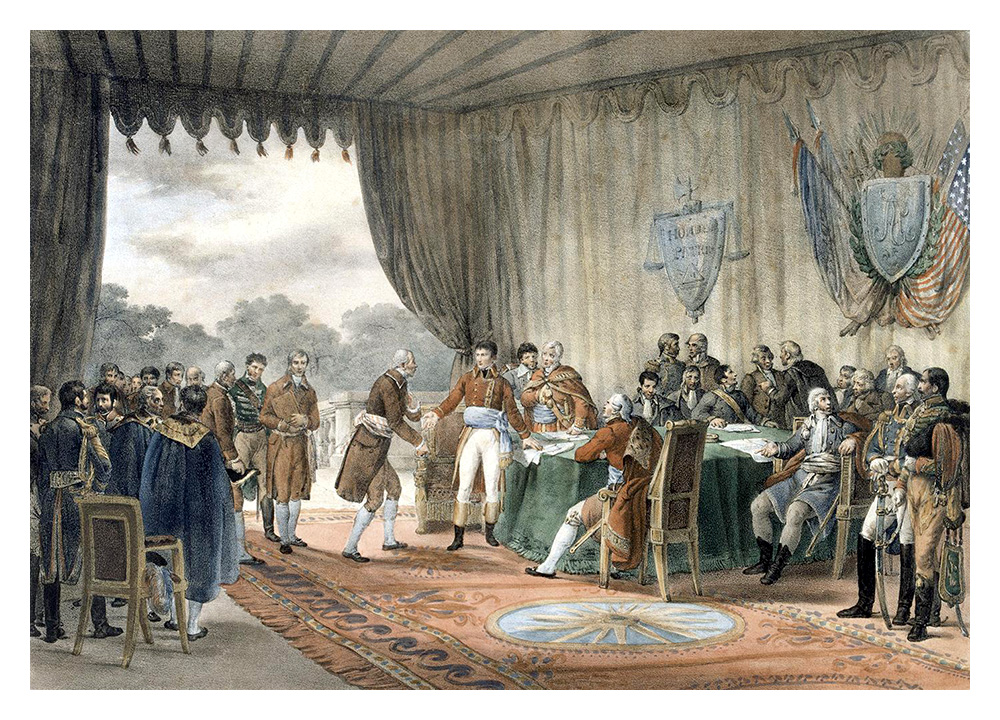

Marbury v. Madison- Background
In the final days of John Adams' presidency (1801), he appointed severeal Federalist judges that were unable to receive their proper commissions after Adams left office. One of those judges was William Marbury; upon Thomas Jefferson being sworn into office, Jefferson refused to give Marbury his commission. Chief Justice John Marshall, a Federalist and Adams appointee, presided over the case. The Court faced the dilemma of balancing the demands of an individual's right to their commission against the potential encroachment on the authority of the executive branch under President Jefferson.
Marbury v. Madison- Ruling
William Marbury, one of Adams' appointees, had been nominated as a justice of the peace for the District of Columbia but did not receive his official commission before the end of Adams' term. When Jefferson took office, his Secretary of State, James Madison, refused to deliver Marbury's commission.Marbury petitioned the Supreme Court, seeking a writ of mandamus, which would compel Madison to deliver his commission. Chief Justice John Marshall, writing for the Court, ruled that while Marbury was entitled to his commission, the Court did not have the authority under the Judiciary Act of 1789 to issue a writ of mandamus in this case.
Marbury v. Madison- Significance
Marbury v. Madison set the precedent for judicial review, affirming the Supreme Court's authority to review the constitutionality of laws passed by Congress. It strengthened the balance of power among the branches of government by establishing the judiciary's role as a check on legislative and executive actions that exceed constitutional bounds. The decision solidified the Court's status as the final arbiter of the Constitution's meaning. Chief Justice Marshall asserted that it was the duty of the judiciary to interpret the Constitution and that any law conflicting with the Constitution is invalid. This landmark ruling solidified the Court's authority in interpreting the Constitution and set the precedent for the concept of judicial review, which remains a fundamental principle of American constitutional law.